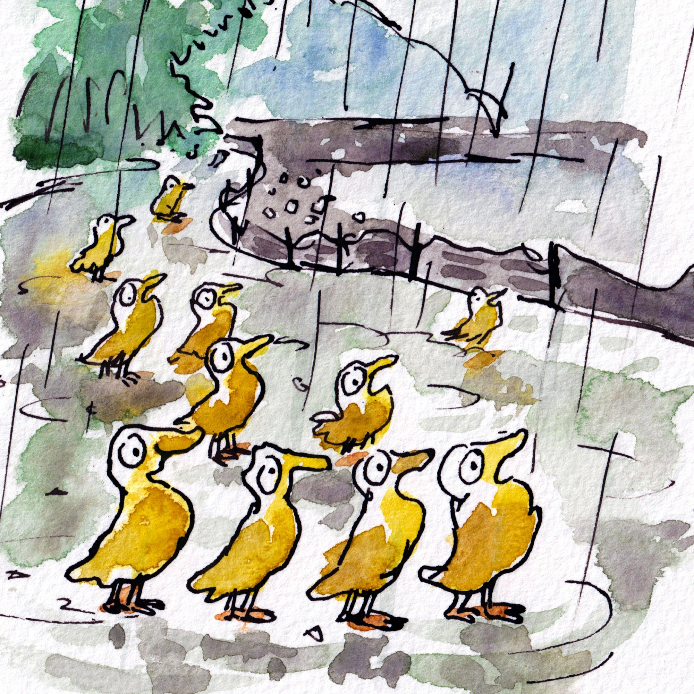

Sebastian Baum
PhD Candidate · University of Stuttgart
I work on machine learning for manufacturing, with a focus on
deep drawing processes. I build open datasets and tools that make
manufacturing research reproducible and accessible.
Looking for FAIR data.
Enjoying geometric deep learning and surrogate modelling.
Repositories
loading…
Attendances
- loading…
Publications
loading…